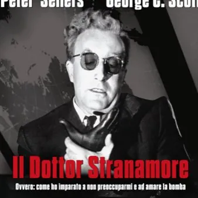

da lun 12 ott a mer 14 ott
Il Dottor Stranamore 4k
La minaccia nucleare, la follia del potere e l’incapacità dell’essere umano di controllare le conseguenze delle proprie azioni. Nelle mani di Stanley Kubrick tutto questo diventa una delle black comedy più celebri e riuscite della storia del cinema: Il Dottor Stranamore. Ovvero…
 Indicazioni
Indicazioni
- Costi e prenotazioni
- Costo non indicato · Prenotazione non indicata
- Programma
- Programma da verificare. Apri la fonte ufficiale per orari e possibili aggiornamenti.
- In caso di maltempo
- Nessuna indicazione specifica pubblicata.
- Note
- Acquisito automaticamente dalla fonte.
L’EVENTO
Descrizione completa
La minaccia nucleare, la follia del potere e l’incapacità dell’essere umano di controllare le conseguenze delle proprie azioni. Nelle mani di Stanley Kubrick tutto questo diventa una delle black comedy più celebri e riuscite della storia del cinema: Il Dottor Stranamore. Ovvero: come ho imparato a non preoccuparmi e ad amare la bomba torna sul grande schermo in una versione restaurata in 4K , proposta come evento speciale per soli tre giorni. Realizzato nel 1964, il film affronta la paura della guerra atomica trasformandola in una satira feroce, surreale e paradossale, capace di far ridere proprio mentre racconta una delle più terribili possibilità della storia contemporanea. Al centro della vicenda c’è un generale americano ossessionato dalla cosiddetta “minaccia comunista”, che decide autonomamente di ordinare un attacco nucleare contro l’Unione Sovietica. Mentre il Presidente degli Stati Uniti e i suoi collaboratori tentano disperatamente di fermare l'operazione, un bombardiere diretto verso l'obiettivo non riceve l'ordine di rientrare alla base. La catastrofe si avvicina inesorabilmente e, con il precipitare degli eventi, l'assurdità del comportamento umano raggiunge livelli sempre più paradossali. A rendere ancora più irresistibile questo cortocircuito tra comicità e tragedia è uno straordinario Peter Sellers , protagonista di ben tre ruoli, affiancato da George C. Scott e da un cast memorabile. Kubrick costruisce così una commedia nerissima nella quale si ride davanti all'assurdo, ma senza dimenticare mai ciò che si nasconde dietro le gag: la possibilità, tutt'altro che fantascientifica, che una decisione folle possa condurre alla distruzione. Candidato a quattro Premi Oscar , tra cui Miglior Film, Miglior Regia, Miglior Attore Protagonista per Peter Sellers e Miglior Sceneggiatura non originale, Il Dottor Stranamore è oggi considerato uno dei capolavori di Kubrick e uno dei vertici della satira politica cinematografica. A oltre sessant'anni dalla sua realizzazione, la sua forza non sembra essersi affievolita: l'ironia diventa infatti lo strumento con cui Kubrick riesce a raccontare l'assurdità di un mondo in cui il destino dell'umanità può dipendere da pochi uomini e da una catena di decisioni incontrollabili. Ad accompagnare l'evento, per tutte e tre le giornate, sarà inoltre una speciale introduzione cinematografica. Prima di ogni proiezione verrà presentato Stanley Kubrick Considers The Bomb , cortometraggio di 5 minuti realizzato nel 2019 in occasione del restauro e della riedizione in 4K del film. Il breve film entra nella mente di Kubrick e racconta il percorso che ha portato il regista a trasformare la paura, diffusissima all'epoca, della guerra nucleare in un'opera capace di affrontare uno dei temi più drammatici del Novecento attraverso l'ironia, il grottesco e un umorismo ancora oggi sorprendentemente attuale. Dal 12 al 14 ottobre in lingua originale sottotitolato ore 17:05 e 21:20
Biglietti disponibili su www.visionario.movie e in biglietteria
IL PROGRAMMA
Programma e orari
Appuntamenti raccolti dalle fonti elencate. Dove manca un orario, non è ancora disponibile in questa scheda.
Programma pubblicato
- Dal 2026-10-12 al 2026-10-14
INFORMAZIONI UTILI
Prima di partire
- Controllare la fonte prima di partire.
ORGANIZZAZIONE